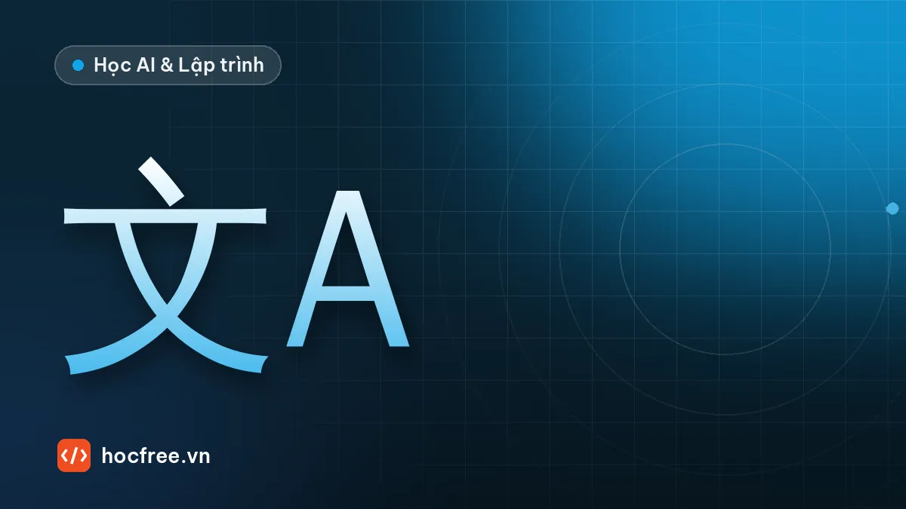

OCR bằng Deep Learning: PaddleOCR, EasyOCR và cách chọn so với Tesseract
Hiểu phát hiện chữ và nhận dạng chữ (DBNet, CRNN, CTC), tự huấn luyện mô hình nhỏ, dùng EasyOCR, PaddleOCR 3.x và so sánh độ chính xác, thời gian.

Học xong bài này, bạn sẽ
- Hiểu phát hiện chữ và nhận dạng chữ
- Dùng PaddleOCR, EasyOCR
- Chọn giữa Tesseract và OCR Deep Learning
Nên học trước: OCR với Tesseract và tiền xử lý
Nội dung bài viết
- 1. Hai bước: phát hiện chữ và nhận dạng chữ
- 2. Phát hiện chữ kiểu DBNet: bản đồ xác suất và "nới" vùng
- 3. Nhận dạng chữ: CRNN và CTC
- 4. Tự huấn luyện một CRNN nhỏ
- 5. Dùng EasyOCR và PaddleOCR
- 6. Thực hành: so sánh hai bộ OCR trên cùng bộ ảnh
- 7. Chọn giữa Tesseract và OCR Deep Learning
- 8. Lỗi thường gặp
- Bài tập
- Tóm tắt
Bài OCR với Tesseract và tiền xử lý kết thúc ở giới hạn thật: chữ in chấm, chữ trên nền phức tạp, nhiều font, nghiêng, cong là những trường hợp mà tiền xử lý không cứu được. OCR dựa trên Deep Learning giải quyết các trường hợp đó bằng cách học trực tiếp từ dữ liệu thay vì dựa vào luật tách ký tự. Bài này giải thích hai bước của mọi hệ OCR hiện đại (phát hiện chữ và nhận dạng chữ), cho bạn tự huấn luyện một bộ nhận dạng nhỏ kiểu CRNN + CTC để hiểu bên trong EasyOCR và PaddleOCR làm gì, hướng dẫn dùng hai thư viện này, và xây khung so sánh độ chính xác, thời gian giữa các bộ OCR trên cùng bộ ảnh. Bài sau là Dự án chặng 7: đọc và xác minh số seri, nơi bạn ghép mọi thứ của chặng thành một trạm hoàn chỉnh.
Reader, readtext, allowlist) và PaddleOCR 3.x (predict); đo độ chính xác chuỗi, CER và thời gian của hai bộ OCR trên cùng bộ ảnh; chọn đúng giữa Tesseract, OCR Deep Learning và các phương án khác cho một trạm cụ thể.1. Hai bước: phát hiện chữ và nhận dạng chữ
Hầu hết hệ OCR Deep Learning chia bài toán làm hai mô hình nối tiếp:
- Phát hiện chữ (text detection): nhận cả ảnh, trả về các đa giác bao từng dòng hoặc từng từ. Không quan tâm chữ gì, chỉ "ở đâu có chữ".
- Nhận dạng chữ (text recognition): nhận từng vùng đã cắt và nắn thẳng (thường đưa về chiều cao cố định, ví dụ 32 hoặc 48 px), trả về chuỗi ký tự và điểm tin cậy.
Giữa hai bước, nhiều hệ có thêm bộ phân loại hướng dòng chữ (0° hay 180°) để đọc được nhãn bị lộn ngược. Bảng tóm tắt kiến trúc của hai thư viện phổ biến:
| EasyOCR | PaddleOCR (PP-OCR) | |
|---|---|---|
| Phát hiện chữ | CRAFT: dự đoán bản đồ "tâm ký tự" và "liên kết giữa ký tự", ghép thành từ | DBNet (Differentiable Binarization): dự đoán bản đồ xác suất vùng chữ đã co lại, nhị phân rồi nới ra |
| Nhận dạng | Kiểu CRNN: CNN trích đặc trưng + LSTM hai chiều + CTC | Các thế hệ PP-OCR dùng CNN/Transformer gọn (họ SVTR) với CTC; PP-OCRv5 đi kèm PaddleOCR 3.x |
| Nền tảng | PyTorch | PaddlePaddle |
| Giấy phép | Apache 2.0 | Apache 2.0 |
Với trạm công nghiệp, điều quan trọng nhất rút ra từ kiến trúc hai bước: nếu bạn đã biết vị trí dòng chữ (nhờ đồ gá hoặc định vị bằng template matching), hãy bỏ bước phát hiện, cắt ROI và chỉ chạy nhận dạng. Nhanh hơn nhiều, và loại bỏ cả một nguồn lỗi (phát hiện sót, phát hiện nhầm chữ khác trên bao bì).
2. Phát hiện chữ kiểu DBNet: bản đồ xác suất và "nới" vùng
DBNet không dự đoán khung trực tiếp. Mạng dự đoán mỗi pixel có thuộc vùng lõi của dòng chữ không (vùng chữ đã bị co vào trong, để hai dòng sát nhau không dính). Bước hậu xử lý: nhị phân bản đồ, tìm contour, rồi nới (unclip) mỗi contour ra một khoảng D = A × r / L, với A là diện tích, L chu vi của vùng lõi và r là hệ số nới (PaddleOCR gọi là unclip_ratio, giá trị hay dùng khoảng 1,5–2). Khối dưới giả lập bản đồ xác suất từ một nhãn có 3 dòng chữ xoay 8° rồi chạy đúng hậu xử lý đó với ba giá trị hệ số nới, so khung tìm được với khung thật bằng IoU.
import cv2
import numpy as np
anh = np.full((240, 400), 225, np.uint8)
mat_na_that = []
for chu, (x, y), co in (("LOT L2610A07", (30, 60), 0.8), ("HSD 23/02/2027", (40, 130), 0.9),
("SN VN000123", (60, 200), 0.7)):
cv2.putText(anh, chu, (x, y), cv2.FONT_HERSHEY_SIMPLEX, co, 30, 2, cv2.LINE_AA)
(tw, th), bl = cv2.getTextSize(chu, cv2.FONT_HERSHEY_SIMPLEX, co, 2)
m = np.zeros_like(anh)
cv2.rectangle(m, (x, y - th), (x + tw, y + bl), 255, -1)
mat_na_that.append(m)
M = cv2.getRotationMatrix2D((200, 120), 8, 1.0) # nhãn dán lệch 8°
anh = cv2.warpAffine(anh, M, (400, 240), borderValue=225)
mat_na_that = [cv2.warpAffine(m, M, (400, 240), flags=cv2.INTER_NEAREST) for m in mat_na_that]
# Giả lập đầu ra của mạng: DBNet học vùng lõi co vào D_co = A(1 − 0,4²)/L mỗi phía, ta làm mềm và thêm nhiễu
def co_lai(m, ti_le=0.4):
c = cv2.findContours(m, cv2.RETR_EXTERNAL, cv2.CHAIN_APPROX_SIMPLE)[0][0]
d = cv2.contourArea(c) * (1 - ti_le ** 2) / cv2.arcLength(c, True)
k = 2 * int(round(d)) + 1
return cv2.erode(m, np.ones((k, k), np.uint8))
loi = sum(co_lai(m) for m in mat_na_that).astype(np.float32) / 255
P = np.clip(cv2.GaussianBlur(loi, (0, 0), 1.5) + np.random.default_rng(0).normal(0, 0.05, loi.shape), 0, 1)
nhi = (P > 0.3).astype(np.uint8) # ngưỡng nhị phân bản đồ xác suất
cs, _ = cv2.findContours(nhi, cv2.RETR_EXTERNAL, cv2.CHAIN_APPROX_SIMPLE)
cs = sorted((c for c in cs if cv2.contourArea(c) >= 50), key=lambda c: cv2.boundingRect(c)[1])
print(f"tìm được {len(cs)} vùng lõi; chiều cao khung thật khoảng "
f"{[round(cv2.minAreaRect(cv2.findNonZero(t))[1][1]) for t in mat_na_that]} px")
for R in (1.5, 2.0, 2.5): # unclip_ratio
dong = []
for c in cs:
A, L = cv2.contourArea(c), cv2.arcLength(c, True)
D = A * R / L
(cx, cy), (w, h), goc = cv2.minAreaRect(c)
hop = cv2.boxPoints(((cx, cy), (w + 2 * D, h + 2 * D), goc)).astype(np.int32) # nới ra D mỗi phía
m_tim = np.zeros_like(anh)
cv2.fillPoly(m_tim, [hop], 255)
iou = max(((m_tim > 0) & (t > 0)).sum() / ((m_tim > 0) | (t > 0)).sum() for t in mat_na_that)
dong.append(f"cao {h:4.1f}→{h + 2 * D:4.1f} px, góc {goc:5.1f}°, IoU {iou:.2f}")
print(f"R = {R}: " + " | ".join(dong))tìm được 3 vùng lõi; chiều cao khung thật khoảng [24, 28, 21] px
R = 1.5: cao 8.4→17.1 px, góc -7.9°, IoU 0.72 | cao 7.6→15.7 px, góc -7.9°, IoU 0.54 | cao 7.4→14.9 px, góc -8.1°, IoU 0.71
R = 2.0: cao 8.4→20.0 px, góc -7.9°, IoU 0.86 | cao 7.6→18.4 px, góc -7.9°, IoU 0.68 | cao 7.4→17.4 px, góc -8.1°, IoU 0.85
R = 2.5: cao 8.4→22.9 px, góc -7.9°, IoU 0.91 | cao 7.6→21.1 px, góc -7.9°, IoU 0.77 | cao 7.4→19.9 px, góc -8.1°, IoU 0.94Ba dòng được tìm đúng, mỗi dòng một vùng lõi chỉ cao khoảng 8 px, kèm góc nghiêng khoảng 8° (OpenCV báo −8° theo quy ước của minAreaRect). Hệ số nới quyết định khung cuối cùng: R = 1,5 cho khung thấp hơn chữ thật nhiều (IoU thấp, ký tự sẽ bị cắt mép trên/dưới), R lớn hơn khớp tốt hơn trong mô phỏng này. Với mô hình thật, giá trị đúng phụ thuộc cách mô hình được huấn luyện, nên hãy kiểm tra trực quan khung trên ảnh của bạn. Ý nghĩa thực tế của các tham số trong thư viện: ngưỡng nhị phân (PaddleOCR: det_db_thresh ở bản 2.x, text_det_thresh ở bản 3.x) thấp thì bắt được chữ mờ nhưng dễ dính dòng; unclip_ratio nhỏ thì khung sát chữ, dễ cắt mất mép ký tự; lớn thì khung lấn sang dòng bên cạnh. Với chữ công nghiệp in thưa, khung bị cắt mép là lỗi rất hay gặp; khi thấy ký tự đầu hoặc cuối dòng hay bị mất, hãy tăng hệ số nới trước khi nghĩ đến chuyện huấn luyện lại.
3. Nhận dạng chữ: CRNN và CTC
Bộ nhận dạng kiểu CRNN làm ba việc: CNN biến ảnh dòng chữ cao 32 px thành một dãy T vector đặc trưng theo chiều ngang (mỗi vector ứng với một dải cột hẹp), LSTM hai chiều cho mỗi vector "nhìn" được ngữ cảnh hai bên, và một lớp tuyến tính cho ra xác suất của mỗi ký tự (cộng một ký hiệu đặc biệt blank) tại mỗi bước. Không cần tách ký tự, không cần biết ký tự nào nằm ở cột nào: hàm mất mát CTC (Connectionist Temporal Classification) tự cộng xác suất của mọi cách căn chỉnh hợp lệ giữa T bước và chuỗi đáp án.
Giải mã CTC đơn giản nhất (greedy): lấy ký hiệu có xác suất cao nhất ở mỗi bước, gộp các ký hiệu lặp liền nhau, rồi bỏ blank. Blank là thứ cho phép đọc chữ cái đôi như "00":
import numpy as np
BANG = "-0123456789" # chỉ số 0 = blank (in ra dấu '-')
def giai_ma_ctc(xac_suat):
"""Greedy CTC: argmax từng bước → gộp lặp liền nhau → bỏ blank."""
k = xac_suat.argmax(axis=1)
duong = "".join(BANG[i] for i in k)
chu, truoc = "", 0
for i in k:
if i != truoc and i != 0:
chu += BANG[i]
truoc = i
return duong, chu
def tu_duong(duong):
"""Tạo ma trận xác suất T × C mà argmax đúng bằng 'duong' (để minh họa)."""
p = np.full((len(duong), len(BANG)), 0.01)
for t, c in enumerate(duong):
p[t, BANG.index(c)] = 0.9
return p
for duong in ("--11--00-00--7-", "-1100007--", "-11-0-0-07-"):
d, chu = giai_ma_ctc(tu_duong(duong))
print(f"đường argmax {d:16s} → chuỗi {chu}")đường argmax --11--00-00--7- → chuỗi 1007
đường argmax -1100007-- → chuỗi 107
đường argmax -11-0-0-07- → chuỗi 10007Dòng giữa cho thấy vì sao cần blank: không có blank giữa hai chữ "0", mọi "0" liên tiếp bị gộp thành một, "10007" thành "107". Mô hình học được cách chèn blank giữa hai ký tự giống nhau. Số bước T phải lớn hơn hẳn số ký tự tối đa (thường gấp 2–3 lần), nếu không chuỗi dài với nhiều ký tự lặp không thể biểu diễn. Các thư viện còn có giải mã beam search (EasyOCR: decoder="beamsearch"), giữ nhiều ứng viên một lúc, đôi khi chính xác hơn greedy một chút.
4. Tự huấn luyện một CRNN nhỏ
Để hiểu thật sự, ta huấn luyện một CRNN tí hon (khoảng 130 nghìn tham số) trên ảnh dòng chữ tổng hợp: chuỗi 5–9 ký tự gồm chữ số, chữ in hoa và gạch ngang, vẽ bằng 3 font Hershey khác nhau, cỡ chữ, độ đậm, vị trí, độ mờ và nhiễu ngẫu nhiên. Khối này chạy khoảng một đến ba phút trên CPU 4 nhân (tùy máy), rồi xuất mô hình sang ONNX để khối sau dùng như một mô hình triển khai thật, và lưu 200 ảnh thử có đáp án.
import csv
import os
import string
import time
import cv2
import numpy as np
import torch
import torch.nn as nn
torch.manual_seed(0)
torch.set_num_threads(4)
BANG = string.digits + string.ascii_uppercase + "-" # 37 ký tự; lớp 0 là blank
FONTS = (cv2.FONT_HERSHEY_SIMPLEX, cv2.FONT_HERSHEY_DUPLEX, cv2.FONT_HERSHEY_PLAIN)
def ve_dong(chu, rng):
"""Ảnh dòng chữ 32×128, giá trị 0..1, chữ tối nền sáng."""
f = FONTS[rng.integers(0, 3)]
co = (1.4 if f == cv2.FONT_HERSHEY_PLAIN else 0.75) * rng.uniform(0.85, 1.1)
net = int(rng.integers(1, 3))
a = np.full((48, 200), int(rng.integers(170, 235)), np.uint8)
(tw, th), _ = cv2.getTextSize(chu, f, co, net)
x = int(rng.integers(2, max(3, 200 - tw - 2)))
cv2.putText(a, chu, (x, int((48 + th) / 2 + rng.integers(-3, 4))), f, co, int(rng.integers(10, 80)), net, cv2.LINE_AA)
a = cv2.resize(a[:, max(0, x - 4):x + tw + 4], (128, 32), interpolation=cv2.INTER_AREA).astype(np.float32)
if rng.random() < 0.5:
a = cv2.GaussianBlur(a, (0, 0), rng.uniform(0.3, 1.0))
return np.clip(a + rng.normal(0, rng.uniform(2, 10), a.shape), 0, 255) / 255.0
def tao_bo(n, seed):
rng = np.random.default_rng(seed)
chu = ["".join(rng.choice(list(BANG), int(rng.integers(5, 10)))) for _ in range(n)]
return np.array([ve_dong(c, rng) for c in chu], np.float32), chu
class CRNN(nn.Module):
def __init__(self, so_lop=len(BANG) + 1):
super().__init__()
def khoi(vao, ra, pool):
return [nn.Conv2d(vao, ra, 3, padding=1), nn.BatchNorm2d(ra), nn.ReLU(), nn.MaxPool2d(pool)]
self.cnn = nn.Sequential(*khoi(1, 16, 2), *khoi(16, 32, 2), *khoi(32, 64, (2, 1)), *khoi(64, 64, (4, 1)))
self.rnn = nn.LSTM(64, 64, bidirectional=True, batch_first=True)
self.fc = nn.Linear(128, so_lop)
def forward(self, x): # x: (B, 1, 32, 128)
f = self.cnn(x).squeeze(2).permute(0, 2, 1) # (B, T=32, 64): 32 bước theo chiều ngang
f, _ = self.rnn(f)
return self.fc(f) # (B, 32, 38)
def giai_ma(logit):
ra = []
for day in logit.argmax(-1).tolist():
s, truoc = "", 0
for k in day:
if k != truoc and k != 0:
s += BANG[k - 1]
truoc = k
ra.append(s)
return ra
t0 = time.perf_counter()
X, Y = tao_bo(4000, seed=1)
Xv, Yv = tao_bo(300, seed=2)
X, Xv = torch.from_numpy(X)[:, None], torch.from_numpy(Xv)[:, None]
nhan = [torch.tensor([BANG.index(c) + 1 for c in y]) for y in Y]
mo_hinh = CRNN()
print("số tham số:", sum(p.numel() for p in mo_hinh.parameters()))
toi_uu = torch.optim.Adam(mo_hinh.parameters(), lr=3e-3)
ctc = nn.CTCLoss(blank=0, zero_infinity=True)
for ep in range(1, 13):
mo_hinh.train()
tong, tron = 0.0, torch.randperm(len(Y)) # xáo trộn thứ tự mỗi epoch
for i in range(0, len(Y), 64):
idx = tron[i:i + 64]
log_p = mo_hinh(X[idx]).log_softmax(-1).permute(1, 0, 2) # CTCLoss cần (T, B, C)
loss = ctc(log_p, torch.cat([nhan[j] for j in idx]),
torch.full((len(idx),), log_p.shape[0], dtype=torch.long),
torch.tensor([len(nhan[j]) for j in idx]))
toi_uu.zero_grad()
loss.backward()
toi_uu.step()
tong += loss.item() * len(idx)
if ep % 3 == 0:
mo_hinh.eval()
with torch.no_grad():
dung = np.mean([p == y for p, y in zip(giai_ma(mo_hinh(Xv)), Yv)])
print(f"epoch {ep:2d}: loss {tong / len(Y):.3f}, chuỗi đúng trên tập kiểm định {dung:.1%}")
print(f"thời gian huấn luyện ~{time.perf_counter() - t0:.0f} s (tùy máy)")
mo_hinh.eval()
torch.onnx.export(mo_hinh, (torch.zeros(1, 1, 32, 128),), "crnn_nho.onnx", input_names=["anh"],
output_names=["logit"], dynamic_axes={"anh": {0: "lo"}, "logit": {0: "lo"}}, dynamo=False)
# 200 ảnh thử (seed khác) lưu ra đĩa, kèm đáp án: dùng chung cho mọi bộ OCR ở mục 6
os.makedirs("bo_thu", exist_ok=True)
Xt, Yt = tao_bo(200, seed=7)
with open("bo_thu/dap_an.csv", "w", newline="", encoding="utf-8") as f:
ghi = csv.writer(f)
ghi.writerow(["file", "chu"])
for i, (a, y) in enumerate(zip(Xt, Yt)):
cv2.imwrite(f"bo_thu/{i:03d}.png", (a * 255).astype(np.uint8))
ghi.writerow([f"bo_thu/{i:03d}.png", y])
print("đã lưu crnn_nho.onnx và 200 ảnh thử trong bo_thu/")số tham số: 132038
epoch 3: loss 3.855, chuỗi đúng trên tập kiểm định 0.0%
epoch 6: loss 1.009, chuỗi đúng trên tập kiểm định 40.3%
epoch 9: loss 0.066, chuỗi đúng trên tập kiểm định 95.0%
epoch 12: loss 0.014, chuỗi đúng trên tập kiểm định 97.7%
thời gian huấn luyện ~79 s (tùy máy)
đã lưu crnn_nho.onnx và 200 ảnh thử trong bo_thu/Kết quả loss và độ chính xác có thể khác một chút giữa các máy và phiên bản thư viện, nhưng hình dạng đường học thì giống nhau: vài epoch đầu loss gần như đứng yên và mô hình chỉ xuất blank (độ chính xác 0%), rồi đột ngột "hiểu ra" cách căn chỉnh và tăng nhanh. Đây là hành vi điển hình của CTC; đừng dừng huấn luyện quá sớm. Xuất ONNX dùng dynamo=False (bộ xuất dựa trên TorchScript, vẫn có trong PyTorch 2.x và cho phép trục batch động bằng dynamic_axes); bộ xuất mặc định mới của PyTorch dùng torch.export, khai báo trục động bằng dynamic_shapes. Khi chạy, PyTorch in cảnh báo rằng bộ xuất cũ đã lỗi thời và cảnh báo LSTM với batch thay đổi; trong bài ta luôn suy luận từng ảnh một (batch 1) nên không bị ảnh hưởng, nhưng nếu muốn chạy theo lô, hãy kiểm tra kết quả ONNX với nhiều kích thước batch. Cách triển khai ONNX trên C# và tối ưu tốc độ được nói kỹ ở chặng AI.
5. Dùng EasyOCR và PaddleOCR
5.1. EasyOCR
pip install easyocr # kéo theo PyTorch; lần chạy đầu tải mô hình về thư mục ~/.EasyOCR# (minh họa) — cần pip install easyocr và mạng để tải mô hình lần đầu
import cv2
import easyocr
reader = easyocr.Reader(["en"], gpu=False) # nạp mô hình MỘT lần khi khởi động trạm, không nạp mỗi ảnh
anh = cv2.imread("bo_thu/000.png")
# Cả ảnh: phát hiện + nhận dạng. Mỗi kết quả: (4 điểm khung, chuỗi, độ tin cậy 0..1)
for khung, chu, tin_cay in reader.readtext(anh, allowlist="0123456789ABCDEFGHIJKLMNOPQRSTUVWXYZ-"):
print(chu, round(tin_cay, 3), khung)
# Chỉ chuỗi: detail=0
print(reader.readtext(anh, detail=0))allowlist(và ngược lạiblocklist) giới hạn ký tự đầu ra, tương tự whitelist của Tesseract.- Ngôn ngữ chọn bằng mã như
["en"],["vi"]; tiếng Việt có dấu cần"vi". Mã số, mã lô chỉ cần"en"(ít ký tự hơn, ít nhầm hơn). - Máy trạm trong nhà máy thường không có Internet: chép thư mục mô hình sang và dùng các tham số
model_storage_directory,download_enabled=FalsecủaReader. - Các tham số của bước phát hiện CRAFT (
text_threshold,low_text,link_threshold,mag_ratio…) và giá trị mặc định có thể đổi giữa các phiên bản; kiểm tra tài liệu phiên bản bạn cài trước khi chỉnh.
5.2. PaddleOCR 3.x
# 1) Cài PaddlePaddle theo hướng dẫn trên trang chủ (bản CPU hoặc GPU khác nhau, chọn đúng phiên bản CUDA)
# 2) Cài PaddleOCR
pip install paddleocr# (minh họa) — PaddleOCR 3.x; cần paddlepaddle + paddleocr và mạng để tải mô hình lần đầu
from paddleocr import PaddleOCR, TextRecognition
ocr = PaddleOCR(
use_doc_orientation_classify=False, # tắt các bước dành cho ảnh chụp tài liệu
use_doc_unwarping=False,
use_textline_orientation=False, # bật nếu nhãn có thể bị lộn ngược 180°
)
for res in ocr.predict("bo_thu/000.png"):
res.print() # chuỗi, điểm tin cậy, đa giác của từng dòng
res.save_to_img("ket_qua_paddle") # ảnh có vẽ kết quả
res.save_to_json("ket_qua_paddle") # kết quả dạng JSON (tên các trường: xem tài liệu phiên bản bạn cài)
# Chỉ nhận dạng trên ROI đã cắt (bỏ bước phát hiện): dùng module nhận dạng riêng
rec = TextRecognition() # có thể chọn model_name cụ thể, xem danh sách mô hình trong tài liệu
for res in rec.predict("bo_thu/000.png"):
res.print()API của PaddleOCR thay đổi lớn giữa bản 2.x và 3.x. Ở 2.x, cách gọi quen thuộc là PaddleOCR(use_angle_cls=True, lang="en") rồi ocr.ocr(anh, cls=True), trả về danh sách [khung, (chuỗi, điểm)]; rất nhiều hướng dẫn trên mạng vẫn viết theo kiểu này và sẽ không chạy đúng trên 3.x. Bản 3.x dùng predict(), trả về các đối tượng kết quả có print(), save_to_img(), save_to_json(). Luôn ghi rõ phiên bản (pip show paddleocr paddlepaddle) trong tài liệu dự án, và kiểm tra tài liệu đúng phiên bản bạn cài, kể cả tên tham số và tên trường kết quả.
6. Thực hành: so sánh hai bộ OCR trên cùng bộ ảnh
Bài thực hành yêu cầu so sánh Tesseract và EasyOCR về độ chính xác và thời gian. Khung so sánh không phụ thuộc thư viện: một hàm danh_gia(ten, ham_doc) nhận bất kỳ hàm nào biến ảnh xám thành chuỗi, chạy trên cùng bộ ảnh có đáp án và đo:
- Tỉ lệ chuỗi đúng hoàn toàn (chỉ số nhà máy cần).
- CER (character error rate) = khoảng cách chỉnh sửa Levenshtein giữa chuỗi đọc và đáp án, chia tổng số ký tự đáp án. Cho biết sai "một chút" hay sai hoàn toàn.
- Thời gian: lần gọi đầu (thường gồm nạp mô hình, khởi tạo) tách riêng; sau đó trung bình và phân vị 95% (p95), vì cycle time bị giới hạn bởi trường hợp chậm, không phải trung bình.
Trong môi trường chạy thử không có Tesseract và EasyOCR, nên ta so hai bộ đọc thay thế đại diện cho hai trường phái: OCR cổ điển (tách ký tự + so mẫu, mẫu chỉ có một font, giống cách bài Tesseract làm) và OCR Deep Learning (CRNN vừa huấn luyện, chạy bằng ONNX Runtime). Khối minh họa ngay sau cho thấy cách cắm Tesseract và EasyOCR vào cùng khung.
import csv
import string
import time
import cv2
import numpy as np
import onnxruntime as ort
BANG = string.digits + string.ascii_uppercase + "-"
with open("bo_thu/dap_an.csv", encoding="utf-8") as f:
BO_THU = [(cv2.imread(r["file"], cv2.IMREAD_GRAYSCALE), r["chu"]) for r in csv.DictReader(f)]
def levenshtein(a, b):
d = list(range(len(b) + 1))
for i, ca in enumerate(a, 1):
truoc, d[0] = d[0], i
for j, cb in enumerate(b, 1):
truoc, d[j] = d[j], min(d[j] + 1, d[j - 1] + 1, truoc + (ca != cb))
return d[len(b)]
def danh_gia(ten, ham_doc):
t0 = time.perf_counter()
ham_doc(BO_THU[0][0]) # lần gọi đầu: khởi tạo, nạp mô hình
lan_dau = (time.perf_counter() - t0) * 1000
dung, loi, tong_ky_tu, ms = 0, 0, 0, []
for anh, dap_an in BO_THU:
t0 = time.perf_counter()
chu = ham_doc(anh)
ms.append((time.perf_counter() - t0) * 1000)
dung += chu == dap_an
loi += levenshtein(chu, dap_an)
tong_ky_tu += len(dap_an)
print(f"{ten:22s} chuỗi đúng {dung / len(BO_THU):6.1%} CER {loi / tong_ky_tu:6.1%} "
f"lần đầu {lan_dau:6.1f} ms TB {np.mean(ms):5.2f} ms p95 {np.percentile(ms, 95):5.2f} ms")
# --- Bộ 1: OCR cổ điển — Otsu, tách thành phần liên thông, so mẫu NCC (mẫu vẽ bằng MỘT font) ---
MAU = {}
for c in BANG:
a = np.zeros((60, 50), np.uint8)
cv2.putText(a, c, (8, 45), cv2.FONT_HERSHEY_SIMPLEX, 1.0, 255, 2, cv2.LINE_AA)
x, y, w, h = cv2.boundingRect((a > 127).astype(np.uint8))
MAU[c] = cv2.resize(a[y:y + h, x:x + w], (16, 24), interpolation=cv2.INTER_AREA).astype(np.float32)
def doc_co_dien(xam):
to = cv2.resize(xam, None, fx=2, fy=2, interpolation=cv2.INTER_CUBIC)
_, nhi = cv2.threshold(to, 0, 255, cv2.THRESH_BINARY_INV + cv2.THRESH_OTSU)
n, _, st, _ = cv2.connectedComponentsWithStats(nhi)
tp = sorted(tuple(int(v) for v in st[i][:4]) for i in range(1, n) if st[i, 4] >= 6)
if not tp:
return ""
h_max = max(t[3] for t in tp)
chu = ""
for x, y, w, h in tp:
if h < 0.4 * h_max and w < 0.6 * h_max: # bỏ mảnh nhỏ (nhiễu), giữ gạch ngang
continue
o = cv2.resize(nhi[y:y + h, x:x + w], (16, 24), interpolation=cv2.INTER_AREA).astype(np.float32)
diem = {c: float(cv2.matchTemplate(o, m, cv2.TM_CCOEFF_NORMED)[0, 0]) for c, m in MAU.items()}
chu += max(diem, key=diem.get)
return chu
# --- Bộ 2: OCR Deep Learning — CRNN nhỏ chạy bằng ONNX Runtime ---
phien = ort.InferenceSession("crnn_nho.onnx", providers=["CPUExecutionProvider"])
def doc_crnn(xam):
x = cv2.resize(xam, (128, 32), interpolation=cv2.INTER_AREA).astype(np.float32)[None, None] / 255.0
k = phien.run(None, {"anh": x})[0][0].argmax(-1)
chu, truoc = "", 0
for i in k:
if i != truoc and i != 0:
chu += BANG[i - 1]
truoc = i
return chu
danh_gia("cổ điển (so mẫu)", doc_co_dien)
danh_gia("CRNN + ONNX Runtime", doc_crnn)
for i in range(4):
print(f" đáp án {BO_THU[i][1]:10s} cổ điển {doc_co_dien(BO_THU[i][0]):12s} CRNN {doc_crnn(BO_THU[i][0])}")cổ điển (so mẫu) chuỗi đúng 59.0% CER 13.1% lần đầu 4.9 ms TB 4.07 ms p95 5.43 ms
CRNN + ONNX Runtime chuỗi đúng 99.0% CER 0.1% lần đầu 1.2 ms TB 0.38 ms p95 0.46 ms
đáp án NPXLSU82B cổ điển NPXUU82B CRNN NPXLSU82B
đáp án WX0IU4 cổ điển WX0IU4 CRNN WX0IU4
đáp án 4HUBCAQ9 cổ điển 4U8CAQ9 CRNN 4HUBCAQ9
đáp án GHILKI-TT cổ điển GHILKI-8 CRNN GHILKI-TTThời gian phụ thuộc máy, chỉ để tham khảo. Đọc kết quả:
- Bộ cổ điển chỉ đọc đúng khoảng 6/10 chuỗi: mẫu chỉ có một font, trong khi bộ ảnh có ba font; thêm vào đó, chữ dính nhau hoặc vỡ nét làm hỏng bước tách ký tự (ví dụ "LS" bị gộp, "H" bị mất). Đây chính là điểm yếu của OCR dựa trên luật tách ký tự khi chữ đa dạng.
- CRNN đọc đúng gần như mọi chuỗi vì đã học cả ba font, không cần tách ký tự, và chạy dưới 1 ms mỗi dòng bằng ONNX Runtime. Phiên ONNX được tạo trước khi đo nên lần gọi đầu đã nhanh; với EasyOCR hay PaddleOCR, riêng việc tạo đối tượng và nạp mô hình có thể mất vài giây, phải làm khi khởi động trạm.
- Nhưng hãy nhớ: CRNN được huấn luyện trên đúng loại ảnh này. Một so sánh công bằng giữa Tesseract và EasyOCR trên ảnh thật của bạn có thể cho kết quả rất khác, và đó là lý do phải tự đo.
Cắm Tesseract và EasyOCR vào cùng khung (chạy trên máy đã cài hai thư viện, sau khi chạy khối trên trong cùng phiên):
# (minh họa) — cần Tesseract + pytesseract và easyocr đã cài; dùng BO_THU, danh_gia của khối trên
import easyocr
import pytesseract
WL = "0123456789ABCDEFGHIJKLMNOPQRSTUVWXYZ-"
reader = easyocr.Reader(["en"], gpu=False) # nạp ngoài vòng đo, như trạm thật
def doc_tesseract(xam):
to = cv2.copyMakeBorder(cv2.resize(xam, None, fx=2, fy=2, interpolation=cv2.INTER_CUBIC),
10, 10, 10, 10, cv2.BORDER_CONSTANT, value=255) # chữ cao ~40 px + viền
cfg = f"--oem 1 --psm 7 -c tessedit_char_whitelist={WL} -c load_system_dawg=0 -c load_freq_dawg=0"
return pytesseract.image_to_string(to, config=cfg).strip().replace(" ", "")
def doc_easyocr(xam):
kq = reader.readtext(xam, detail=0, allowlist=WL)
return "".join(kq).replace(" ", "")
danh_gia("Tesseract --psm 7", doc_tesseract)
danh_gia("EasyOCR (CPU)", doc_easyocr)Khi báo cáo kết quả so sánh, ghi rõ: phiên bản thư viện, phần cứng (CPU/GPU), có tính thời gian nạp mô hình không, ảnh đã cắt ROI hay cả ảnh, và cấu hình (whitelist, PSM). Thiếu các thông tin này, con số so sánh không có giá trị.
7. Chọn giữa Tesseract và OCR Deep Learning
| Tiêu chí | Tesseract | EasyOCR / PaddleOCR |
|---|---|---|
| Chữ in rõ, nét liền, nền sạch | Tốt (sau tiền xử lý) | Tốt |
| Nền phức tạp, chữ nghiêng, cong, nhiều font | Kém | Tốt hơn rõ rệt |
| Chữ in chấm, khắc tương phản thấp | Kém | Khá; tốt nhất khi tinh chỉnh trên dữ liệu của bạn |
| Cần tìm chữ ở vị trí không biết trước | Phân tích bố cục dành cho tài liệu | Có bộ phát hiện chữ chuyên dụng |
| Tốc độ trên CPU | Nhanh với ROI nhỏ | Chậm hơn, nhất là bước phát hiện; GPU hoặc tối ưu (ONNX, OpenVINO) giúp nhiều |
| Dung lượng, phụ thuộc | Nhẹ, một chương trình + file dữ liệu | Nặng (PyTorch hoặc PaddlePaddle, mô hình hàng chục MB trở lên) |
| Tinh chỉnh trên dữ liệu riêng | Có thể nhưng quy trình phức tạp | PaddleOCR có bộ công cụ huấn luyện đầy đủ |
Quy tắc thực dụng cho trạm công nghiệp:
- Nếu có thể, in mã 2D và đọc mã (bài đọc mã QR và DataMatrix); OCR chỉ là phương án khi bắt buộc đọc chữ.
- Biết trước nội dung: dùng OCV (so mẫu), nhanh và tin cậy nhất.
- Font cố định, chữ rõ, ROI cố định: Tesseract với tiền xử lý, PSM 7, whitelist; hoặc OCR so mẫu.
- Chữ khó (nền phức tạp, nhiều font, cong, chấm): OCR Deep Learning, chỉ chạy nhận dạng trên ROI nếu được; tinh chỉnh khi độ chính xác chưa đạt.
- Dù chọn gì: hậu xử lý theo định dạng, kiểm tra giá trị, ngưỡng tin cậy, NOREAD khi không chắc (bài OCR và OCV trong công nghiệp).
8. Lỗi thường gặp
| Lỗi | Triệu chứng | Cách sửa |
|---|---|---|
| Nạp mô hình trong vòng lặp xử lý ảnh | Mỗi ảnh mất vài giây | Tạo Reader/PaddleOCR một lần khi khởi động |
| Chạy phát hiện chữ trên cả ảnh khi đã biết ROI | Chậm, đọc nhầm chữ khác trên bao bì | Cắt ROI, chỉ chạy nhận dạng |
| Làm theo hướng dẫn PaddleOCR 2.x trên bản 3.x | Lỗi tham số, kết quả rỗng hoặc cấu trúc khác | Kiểm tra phiên bản, đọc tài liệu đúng bản |
| Máy trạm không có Internet | Lần chạy đầu treo khi tải mô hình | Chép mô hình sẵn, tắt tải tự động |
| So sánh bộ OCR trên vài ảnh mẫu trên mạng | Chọn sai công cụ | Bộ ảnh thật có đáp án, đo chuỗi đúng, CER, thời gian p95 |
| Tin điểm tin cậy tuyệt đối | Đọc sai với điểm cao vẫn lọt | Ngưỡng chọn theo thống kê + kiểm tra định dạng, giá trị |
Bài tập
Bài 1. Mô hình CRNN ở mục 4 có T = 32 bước. Chuỗi dài nhất có thể đọc được là bao nhiêu ký tự, trong trường hợp tốt nhất (mọi ký tự khác nhau) và xấu nhất (mọi ký tự giống nhau, ví dụ "0000…")? Nếu số seri dài 20 ký tự, có nên giữ ảnh rộng 128 px không?
Xem đáp án
Tốt nhất 32 ký tự (mỗi bước một ký tự, không cần blank). Xấu nhất 16 ký tự: giữa hai ký tự giống nhau bắt buộc có một blank, nên n ký tự cần ít nhất 2n − 1 bước, 2n − 1 ≤ 32 → n ≤ 16. Thực tế mô hình học tốt khi T gấp khoảng 2–3 lần số ký tự, vì mỗi ký tự trải trên nhiều cột. Với seri 20 ký tự, nên tăng chiều rộng ảnh (ví dụ 256 px, T = 64) để mỗi ký tự vẫn có khoảng 3 bước và chữ không bị bóp hẹp khi resize.
Bài 2. Viết thêm vào khung đánh giá ở mục 6 một chỉ số "đọc sai tự tin": số ảnh đọc sai nhưng vượt qua kiểm tra định dạng ^[0-9A-Z-]{5,9}$. Vì sao chỉ số này quan trọng hơn CER với nhà máy? Gợi ý: định dạng ở đây rất lỏng, hãy nghĩ xem với định dạng chặt như L9999A99 thì kết quả thay đổi thế nào.
Xem đáp án
import csv
import re
import string
import cv2
import numpy as np
import onnxruntime as ort
BANG = string.digits + string.ascii_uppercase + "-"
DINH_DANG = re.compile(r"^[0-9A-Z-]{5,9}$")
phien = ort.InferenceSession("crnn_nho.onnx", providers=["CPUExecutionProvider"])
with open("bo_thu/dap_an.csv", encoding="utf-8") as f:
BO_THU = [(cv2.imread(r["file"], cv2.IMREAD_GRAYSCALE), r["chu"]) for r in csv.DictReader(f)]
def doc_crnn(xam):
x = cv2.resize(xam, (128, 32), interpolation=cv2.INTER_AREA).astype(np.float32)[None, None] / 255.0
chu, truoc = "", 0
for i in phien.run(None, {"anh": x})[0][0].argmax(-1):
if i != truoc and i != 0:
chu += BANG[i - 1]
truoc = i
return chu
def doc_sai_tu_tin(ham_doc, bo_thu):
return sum(1 for anh, dap_an in bo_thu if (c := ham_doc(anh)) != dap_an and DINH_DANG.match(c))
print("CRNN đọc sai mà qua kiểm tra định dạng:", doc_sai_tu_tin(doc_crnn, BO_THU), "/", len(BO_THU))CRNN đọc sai mà qua kiểm tra định dạng: 2 / 200CER cho biết sai bao nhiêu ký tự, nhưng nhà máy quan tâm sản phẩm nào bị ghi sai dữ liệu mà không ai phát hiện. Với định dạng lỏng (chuỗi 5–9 ký tự bất kỳ), gần như mọi lỗi đọc đều "hợp lệ", nên mọi lỗi đọc đều là đọc sai tự tin. Với định dạng chặt (vị trí chữ, vị trí số, giá trị tháng, chữ số kiểm tra), phần lớn lỗi đọc bị chặn thành NOREAD. Đó là lý do thiết kế mã có cấu trúc chặt và chữ số kiểm tra quan trọng không kém việc chọn bộ OCR.
Bài 3. Trạm đọc số lô trên bao xi măng: chữ in phun chấm cỡ lớn trên giấy kraft nâu có vân, bao chạy 40 bao/phút, vị trí dòng chữ lệch ±50 mm. Khách hàng có sẵn PC có GPU. Đề xuất phương án OCR và kế hoạch đánh giá.
Xem đáp án
- Chữ chấm trên nền giấy có vân là trường hợp khó cho Tesseract. Chọn OCR Deep Learning (PaddleOCR hoặc EasyOCR) có bước phát hiện chữ, vì vị trí dòng lệch nhiều; hoặc định vị dòng chữ trước bằng mốc in cố định nếu có, rồi chỉ chạy nhận dạng.
- Thời gian: 40 bao/phút = 1,5 s mỗi bao, dư sức cho mô hình DL trên GPU, thậm chí trên CPU. Vẫn đo p95 thực tế.
- Kế hoạch: thu 300–500 ảnh thật qua nhiều ca, gõ đáp án; đo chuỗi đúng, CER, đọc sai tự tin của mô hình có sẵn; nếu chưa đạt, tinh chỉnh bộ nhận dạng với ảnh dòng chữ của dây chuyền (vài nghìn mẫu, có thể bổ sung ảnh tổng hợp chữ chấm); thêm hậu xử lý theo định dạng số lô và so với lệnh sản xuất.
- Chiếu sáng: đèn khuếch tán để giảm vân giấy; thử màu đèn tăng tương phản mực trên nền nâu (ví dụ mực đen trên kraft thường rõ hơn dưới ánh sáng đỏ).
Tóm tắt
- OCR Deep Learning gồm phát hiện chữ (DBNet trong PaddleOCR, CRAFT trong EasyOCR) và nhận dạng chữ (CRNN/SVTR + CTC). Biết ROI thì bỏ bước phát hiện.
- DBNet: nhị phân bản đồ xác suất vùng lõi, tìm contour, nới ra D = A·r/L; ngưỡng và hệ số nới ảnh hưởng trực tiếp đến việc cắt mất ký tự đầu/cuối dòng.
- CTC cho phép học mà không cần vị trí từng ký tự; giải mã greedy: gộp lặp, bỏ blank. Huấn luyện CTC thường đứng yên vài epoch đầu rồi tăng nhanh.
- EasyOCR:
Reader([...])một lần,readtext(anh, allowlist=..., detail=...). PaddleOCR 3.x:PaddleOCR(...).predict(), khác hẳnocr.ocr(img, cls=True)của 2.x; luôn kiểm tra tài liệu đúng phiên bản. - So sánh bộ OCR bằng một khung chung trên bộ ảnh thật: chuỗi đúng, CER, đọc sai tự tin, thời gian lần đầu, trung bình và p95.
Bài tiếp theo: Dự án chặng 7: đọc và xác minh số seri, ghép định vị, đọc, sửa theo định dạng và xác minh với lệnh sản xuất thành một trạm hoàn chỉnh.
Bài tập thực hành
- So sánh Tesseract và EasyOCR trên cùng bộ ảnh mẫu: độ chính xác và thời gian xử lý.
Làm xong bài tập mới chuyển sang bài tiếp theo: tự viết code là cách duy nhất để nhớ lâu.